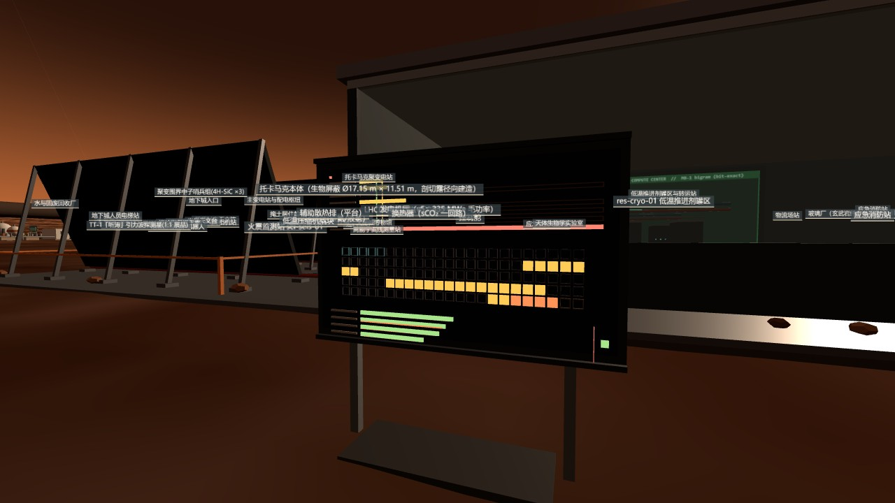
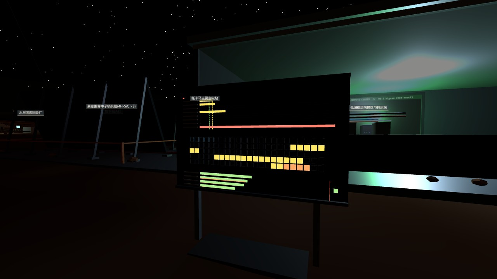
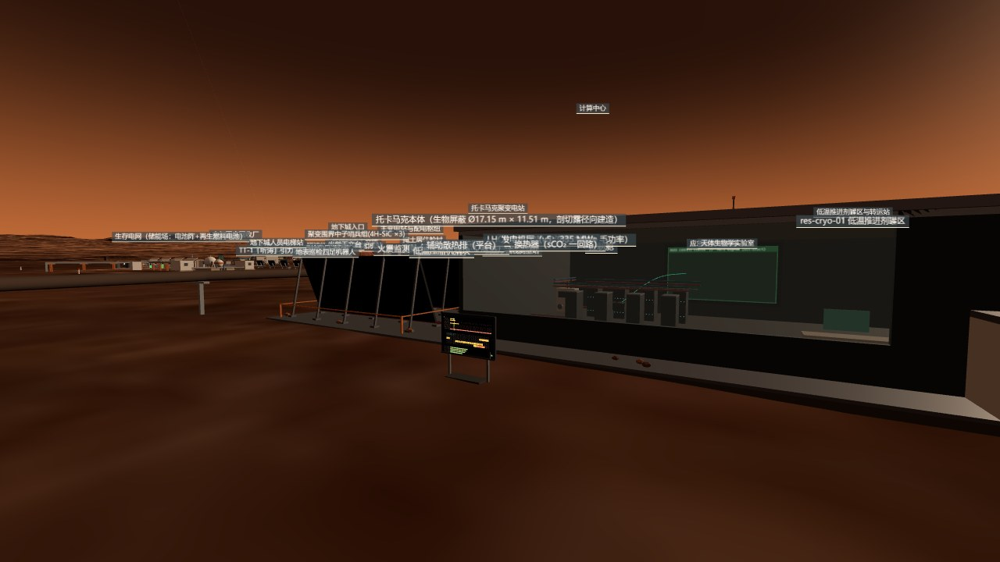

The city has 79 registered assets, 80 knowledge cards and, until this round, no layer for the people who live in it: who sleeps where, for how long, how much of a dose allowance each person has left, how EVA hours are shared. This page is five ledgers that ask those questions of the cards as written - a bed and workstation census, a dose map, three quota lines printed side by side, a machine-readable roster, and two stress tests - with every expectation registered before the first card was opened, every number traced to a card commit or a run, and every number the cards do not hold left as null, never estimated.
A dossier with no measurement of its own. Every number here is a citation - a city card at a named commit, the village's berth file, the life-support dossier's staffing script, the RAD instrument's published surface dose - or arithmetic on citations. What it adds is the arithmetic nobody had done across cards, and the blanks nobody had printed.
The village had just written its stay limit as policy - a floor per cabin class from the glass works' Run B, a formula that turns a floor and an EVA share into sols, and a set of occupancy weights it calls occupancy v1. That covers one living area. The undercity quarter, the surface duty cabins, the airlock hall, the deep laboratory: none has a dose floor a person could be assigned to, and no card in the city says how many people each unit needs. The census found ten cards that state their own crew - eight of them say "unmanned" - and one card, the life-support ledger, that states the city's population by a billet method: 115 people, 85 sleeping in the undercity, 30 in the village. The undercity's only residential card describes five single cabins.
So the roster is mostly empty on purpose. Of 115 people, 87 carry a dose of null: 85 because the 30 m rock layer has a shielding factor on its cards but no absolute floor, 2 because the village's corner cabin has no Run B number. The board built from it draws those people as empty frames. The rule from the first commit is that a blank is a finding, and filling it would be the error.


Five ledgers in the order each feeds the next. Each script carries its gates in its docstring and refuses to write a result if any gate is red; the runner exits non-zero on any red and on a roster that is not byte-identical on a second run.
Beds and workstations from the cards, nothing from geometry. Two regex passes over 80 cards produced 829 candidate sentences, 86 with a number next to a people-word, each read by a person. Residential beds: the village's 30 (24 in standard cabins, 4 in the two end cabins, 2 in the corner cabin - the berth file is the source of truth and a gate demands it counts to 30) plus the quarter's five single cabins - 35, with 2 temporary and 5 non-residential (a show-home bed, four Starship sleep pods). The clinic has a module with a scanner couch and no card, so it is a gap, not a bed. Ten cards state a crew, eight of them "unmanned"; the fire station says zero full-time and sixteen part-time drawn from the population. Capacities that are not people - a 12-person lift cab, "3-7 crew (inferred)" on the CZ-10B, 15 cinema seats, 12 seats at the commons tables - are printed in their own column and never summed. Expectation E1.1 (40-70 beds) missed at 35, and the miss stands.
27 positions, 6 with a number. The village's four Run B receptors (standard bunk 27.0 mSv/yr, end bunk 31.9, old living position 52.8, airlock box 93.7 - all lower bounds, seeds and sigma beside them), the RAD surface 234 mSv/yr and its per-sol EVA form 0.66 mSv. Eleven undercity positions and the deep laboratory have shielding factors on their cards - 5000 g/cm², 52 hadronic e-folds, muons ×0.03, ×10⁻⁶ at 3 km - but no absolute floor: the 0.3 mSv/yr muon floor the surface station quotes is marked by the village's own berm card as a self-set order of magnitude, so the map does not use it. Every surface building interior is "no basis". A known-answer gate checks that 234 ÷ 365.25 × 1.0275 returns 0.658, within 1% of the 0.66 the policy uses; an ablation removes each village floor in turn and requires the blank share only to rise.
Three lines, printed side by side, never merged. The city's 20 mSv per Earth year indoors; the village's own 50 mSv per Mars year; and the occupational limits by version - NASA-STD-3001 Vol. 1 Rev. C, 600 mSv career for every age and sex, and ICRP Publication 103, 20 mSv/yr averaged over five years with no year above 50. An independent rewrite of the village formula reproduces its table exactly (263 / 228 / 201 sols to 20 mSv for a standard bunk at 0 / 0.5 / 1 h EVA; 160 / 148 / 137 under occupancy v1). Per sol, the village line is 1.33× looser than the city's, so the village's sentence that its own line is "stricter than 20" holds only in its zero-EVA indoor conversion. The career line binds nobody who stays under thirty years: at occupancy v1 with half an hour of EVA it is spent in 4,431 sols, 12.5 Earth years; living on the surface, 2.56 years. The ICRP five-year average cannot be met in the village under any schedule, since the bunk floor alone is 27.
roster.json 1.0.0: 115 people, 76% null. The life-support dossier's 22 billet rows expand into individuals; villagers take berths in the order the berth file lists them; EVA hours are the only per-person number any card gives - the life-support duty split puts a villager at 2.6 h/sol and an undercity resident at 0.3. The dose per sol follows occupancy v1 exactly (8.0 h asleep at the bunk floor, the rest awake at the living floor, EVA at 0.66/24.65), and a person whose sleep or awake floor is null gets a null dose with a gap field naming what is missing and whose card could fill it. A conservation gate sums the roster two ways (per person, per location × person-hours) and demands agreement to 10⁻⁶; a known-answer gate demands 148 sols for the standard bunk at X = 0.5; a schema gate validates the file; the runner checks determinism. What scheduling can change is X alone: from 0.5 h to zero buys 8% more stay. The floor is geometry's.
Full village; one measured solar particle event. Dose is not a shared resource, so filling all 30 beds changes no one's floor - it changes the EVA share, because the life-support card does give a city-wide EVA demand, 104 person-hours per sol, 78 of them the village's: at 24 occupants that is 3.3 h each and 104 sols to the line, at 32 it is 2.4 h and 114. The only SEP this dossier will cite is the one RAD measured on the surface: 10-11 September 2017, 418 µGy in silicon, peak rate 2-3× the GCR background. Converted with a declared silicon-to-water factor of 1.3 and a quality factor scanned from 1.0 to 1.5 - not chosen - that is 0.54-0.82 mSv, under one sol of ordinary surface dose, 2.7-4.1% of the 20 mSv line. The asymmetric conclusion registered in advance: this rules out "a RAD-class event triggers a rotation"; it does not license "SEP is safe", because the larger historical events were never measured on Mars and the attenuation under 2 m of soil or 30 m of rock has no run.
What the board draws

Every headline number on this page, the state it is in, and the script that produced it. Scripts live in the dossier mars-roster/ledger/ and write mars-roster/ledger/out/; the pre-registration is the dossier's first commit.
| Claim | Value | State | Produced by |
|---|---|---|---|
| Registered assets / unit modules / cards | 79 / 78 / 80 | measured · brief said 82, not reconciled | mars-roster/ledger/01_census.py |
| Residential beds on the cards | 35 (+2 temp, +5 non-res.) | census · E1.1 miss (40-70) | 01_census.py · hab-village-01 plaza · hab-quarter-01 cabin |
| Village beds vs berth file | 30 = 24 std + 4 end + 2 corner | known-answer gate G1.3 | 01_census.py · mars-village berths.json v5d |
| City population | 115 = 85 + 30 | derived by another card, not self-reported | res-eclss-01 screen · mars-eclss calc/L0_population.py |
| Cards stating their own crew | 10 of 79 (8 unmanned) | census | 01_census.py |
| Units whose crew count is a gap | 42 | declared gap · per-unit list in json | 01_census.py |
| People without a card bed | 80 | census · 85 vs 5 cabins | 01_census.py · 04_roster.py |
| Dose-map positions with a number | 6 of 27 | map · E2.1 hit | 02_dose_map.py |
| Village floors: std / end / living(old) / airlock | 27.0 / 31.9 / 52.8 / 93.7 mSv/yr | ruled · Run B lower bounds | hab-village-01 plaza card · Run B b2077f4 |
| Surface dose; EVA per sol | 234 mSv/yr · 0.66 mSv/sol | measured · RAD | sci-rad-01 rack card (RAD anchor) |
| 234/365.25 × 1.0275 vs 0.66 | 0.658 · 0.26% | known-answer gate G2.2 | 02_dose_map.py |
| Undercity absolute floor | null | not closable · missing rock γ background and a measured muon floor | 02_dose_map.py · hab-quarter-01 · sci-rad-03 |
| Deep-lab absolute floor | null | not closable · µ ×10⁻⁶ only | 02_dose_map.py · sci-deeplab-01 · sci-rad-04 |
| Village table reproduced | 263/228/201 · 160/148/137 | cross-implementation gate G3.1 | 03_quota.py |
| City line vs village line, per sol | 0.0563 vs 0.0748 mSv · 1.33× | account | 03_quota.py |
| Career 600 mSv, occupancy v1, X = 0.5 | 4,431 sol · 12.5 yr | account · NASA-STD-3001 Rev. C | 03_quota.py |
| Career 600 mSv on the surface | 2.56 yr | account | 03_quota.py |
| ICRP 103 five-year average in the village | not satisfiable | asymmetric · 27 > 20 before EVA | 03_quota.py |
| Roster people / with a number / null share | 115 / 28 / 76% | roster.json 1.0.0 | 04_roster.py |
| Conservation, two summation routes | 5.0369 = 5.0369 mSv/sol | gate G4.1 · first version red on rounding | 04_roster.py |
| Villager EVA share, life-support split | 2.6 h/sol | cited · not in the village's v1 table | mars-eclss L0 duty_split · 04_roster.py |
| Std bunk to 20 mSv at X = 2.6 | 112 sol | account · v1 structure, fourth column | 04_roster.py · 05_stress.py |
| Stay bought by X 0.5 → 0 | 148 → 160 sol · +8% | account · E4.4 | 04_roster.py |
| City EVA demand; village share | 104 · 78 person-h/sol | cited | res-eclss-01 screen card |
| Full village 24 → 32 occupants | X 3.3 → 2.4 h · 104 → 114 sol | account · floors unchanged (gate G5.4) | 05_stress.py |
| RAD SEP of Sept 2017, surface | 418 µGy (Si) | literature · Zeitlin et al. 2018 GRL | 05_stress.py constants |
| Same event as tissue dose equivalent | 0.54-0.82 mSv · 2.7-4.1% of 20 | declared conversion (1.3 × Q 1.0-1.5) · E5.1 miss on the letter | 05_stress.py |
| SEP under soil or rock | ≤ surface value | bound only · no run | 05_stress.py |
| Board geometry | 5,136 tris · 2.52 × 2.45 × 0.60 m · minY 0 | measured · validate_unit | viewer/units/roster-board.js |
| In-city smoke test | scale 1 · 54 assets · 0 console errors | measured · ?colony=1&debug=1 | viewer/index.html |
Twenty-two expectations were written before the first card was opened. Two missed, four could not be decided, and two gates went red on their first version. These are the ones worth reading.
The pre-registration guessed one to four beds per undercity cabin and up to fifteen temporary bunks. The quarter's card says five single cabins; the only temporary bunks are two in the village and four sleep pods in a landed Starship that is a museum piece. The band stays where it was written; the miss is the finding: the city's residential capacity on paper is a third of its stated population.
The quarter's card gives a shielding factor and the phrase "about Earth background"; the sentinel column gives 52 hadronic e-folds and muons ×0.03; the surface station's 0.3 mSv/yr muon floor is, on the village's own berm card, a self-set order of magnitude with no measurement. Eighty-five people therefore carry a null dose. Writing 0.3 would have filled the roster and hidden the gap.
The ISRU card describes a 480-sol unmanned production period; the life-support staffing script bills it six people on continuous shifts, housed in the undercity. Both are cited in the same census row with "registered, not ruled". A roster that picked one would be manufacturing a fact.
Summing per-person doses after rounding to five decimals and comparing with a per-location sum missed by 2×10⁻⁴ over 28 people. The gate now sums unrounded components; the band (10⁻⁶) did not move, and the reason is in the script. A second gate - "a person with zero shares gets zero dose" - had been written so it could not fail; it now also requires a non-zero share to give a non-zero dose.
Not a contradiction in any one card, but a cross-ledger difference nobody had multiplied out: at 2.6 h/sol a standard-bunk villager reaches 20 mSv in 112 sols, not 148. The roster prints it as a fourth column inside the v1 structure and sends the difference to both holders.
The upper edge of the declared conversion (silicon-to-water 1.3, Q 1.5) gives 0.815 mSv, 4.08% of 20. The letter of the expectation says 4%. It is scored as a miss rather than rounded into a hit, because a band that is stretched after the fact is not a band.
viewer/units/roster.json - 115 people, 8 locations, 4 scenarios, gates, and a gap string on every null.import { RosterBoard } from './roster-board.js', import { ROSTER } from './roster-data.js', then host.add(RosterBoard(THREE, ROSTER)) and merge its nightMats. No three.js import, no textures, no DOM.python ledger/run_all.py in the dossier. A red gate or a non-deterministic roster exits non-zero, and the commit command is chained on that exit code.roster_v1.0.0.json with a lineage pointer.Data interface for the engine's "where people are" layer
roster.json
schema "ops-roster-01/roster" version "1.0.0" occupancy "v1"
locations[] { id, unit, status: ruled|measured|card_shielding|pending|none, floor_msv_per_earth_yr|null, beds|null }
people[] { id p001..p115, home: undercity|village, billet, sleep_location, awake_location,
eva_h_per_sol, dose_msv_per_sol|null, components{habitat_sleep, habitat_awake, eva},
remaining{city20_sol, village50_sol, nasa600_sol}|nulls, rotation_sol|null, gap|null }
scenarios[] { id, eva_h_per_sol, city20_sol_std, city20_sol_end, source }
totals { n_people, n_with_number, null_share, eva_person_h_per_sol, people_without_card_bed, ... }
gates { name: true|false } lineage { supersedes|null }